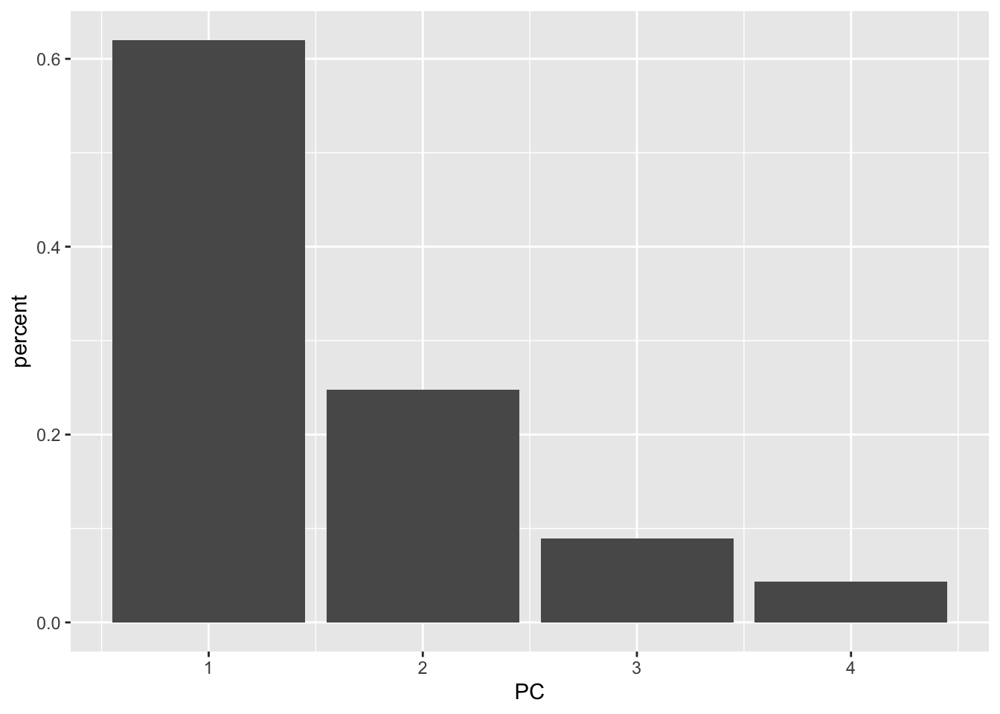

10 Unsupervised Learning
## Registered S3 method overwritten by 'tune':
## method from
## required_pkgs.model_spec parsnip## ── Attaching packages ────────────────────────────────────── tidymodels 0.1.3 ──## ✓ broom 0.7.6 ✓ recipes 0.1.16
## ✓ dials 0.0.9 ✓ rsample 0.1.0.9000
## ✓ dplyr 1.0.6 ✓ tibble 3.1.1
## ✓ ggplot2 3.3.3 ✓ tidyr 1.1.3
## ✓ infer 0.5.4 ✓ tune 0.1.5
## ✓ modeldata 0.1.0 ✓ workflows 0.2.2
## ✓ parsnip 0.1.5.9002 ✓ workflowsets 0.0.2
## ✓ purrr 0.3.4 ✓ yardstick 0.0.8## ── Conflicts ───────────────────────────────────────── tidymodels_conflicts() ──
## x purrr::discard() masks scales::discard()
## x dplyr::filter() masks stats::filter()
## x dplyr::lag() masks stats::lag()
## x recipes::step() masks stats::step()
## • Use tidymodels_prefer() to resolve common conflicts.## ── Attaching packages ─────────────────────────────────────── tidyverse 1.3.1 ──## ✓ readr 1.4.0 ✓ forcats 0.5.1
## ✓ stringr 1.4.0## ── Conflicts ────────────────────────────────────────── tidyverse_conflicts() ──
## x readr::col_factor() masks scales::col_factor()
## x purrr::discard() masks scales::discard()
## x dplyr::filter() masks stats::filter()
## x stringr::fixed() masks recipes::fixed()
## x dplyr::lag() masks stats::lag()
## x readr::spec() masks yardstick::spec()##
## Attaching package: 'magrittr'## The following object is masked from 'package:tidyr':
##
## extract## The following object is masked from 'package:purrr':
##
## set_names## Welcome! Want to learn more? See two factoextra-related books at https://goo.gl/ve3WBa##
## Attaching package: 'proxy'## The following objects are masked from 'package:stats':
##
## as.dist, dist## The following object is masked from 'package:base':
##
## as.matrix## Package 'mclust' version 5.4.6
## Type 'citation("mclust")' for citing this R package in publications.##
## Attaching package: 'mclust'## The following object is masked from 'package:purrr':
##
## map10.1 Principal Components Analysis
usarrests <- as_tibble(USArrests, rownames = "state")
glimpse(usarrests)## Rows: 50
## Columns: 5
## $ state <chr> "Alabama", "Alaska", "Arizona", "Arkansas", "California", "Co…
## $ Murder <dbl> 13.2, 10.0, 8.1, 8.8, 9.0, 7.9, 3.3, 5.9, 15.4, 17.4, 5.3, 2.…
## $ Assault <int> 236, 263, 294, 190, 276, 204, 110, 238, 335, 211, 46, 120, 24…
## $ UrbanPop <int> 58, 48, 80, 50, 91, 78, 77, 72, 80, 60, 83, 54, 83, 65, 57, 6…
## $ Rape <dbl> 21.2, 44.5, 31.0, 19.5, 40.6, 38.7, 11.1, 15.8, 31.9, 25.8, 2…
# scale before applyig PCA
set.seed(1)
pca_recipe <- recipe(~., data = usarrests) %>%
step_scale(all_numeric()) %>%
step_pca(all_numeric(), id = "pca") %>%
prep()
usarrests %>%
column_to_rownames("state") %>%
prcomp(scale = TRUE) %>%
fviz_pca_biplot(title = "Biplot PCA on usarrests")
# loadings
tidy(pca_recipe, type = "coef", id = "pca")## # A tibble: 16 x 4
## terms value component id
## <chr> <dbl> <chr> <chr>
## 1 Murder -0.319 PC1 pca
## 2 Assault -0.368 PC1 pca
## 3 UrbanPop -0.774 PC1 pca
## 4 Rape -0.405 PC1 pca
## 5 Murder -0.579 PC2 pca
## 6 Assault -0.484 PC2 pca
## 7 UrbanPop 0.603 PC2 pca
## 8 Rape -0.258 PC2 pca
## 9 Murder 0.418 PC3 pca
## 10 Assault 0.197 PC3 pca
## 11 UrbanPop 0.188 PC3 pca
## 12 Rape -0.867 PC3 pca
## 13 Murder -0.624 PC4 pca
## 14 Assault 0.769 PC4 pca
## 15 UrbanPop -0.0381 PC4 pca
## 16 Rape -0.134 PC4 pca
tidy(pca_recipe, type = "coef", id = "pca") %>%
pivot_wider(
id_cols = "terms",
names_from = "component",
values_from = "value"
)## # A tibble: 4 x 5
## terms PC1 PC2 PC3 PC4
## <chr> <dbl> <dbl> <dbl> <dbl>
## 1 Murder -0.319 -0.579 0.418 -0.624
## 2 Assault -0.368 -0.484 0.197 0.769
## 3 UrbanPop -0.774 0.603 0.188 -0.0381
## 4 Rape -0.405 -0.258 -0.867 -0.134
# variance
tidy(pca_recipe, type = "variance", id = "pca")## # A tibble: 16 x 4
## terms value component id
## <chr> <dbl> <int> <chr>
## 1 variance 35.7 1 pca
## 2 variance 1.47 2 pca
## 3 variance 0.394 3 pca
## 4 variance 0.180 4 pca
## 5 cumulative variance 35.7 1 pca
## 6 cumulative variance 37.1 2 pca
## 7 cumulative variance 37.5 3 pca
## 8 cumulative variance 37.7 4 pca
## 9 percent variance 94.6 1 pca
## 10 percent variance 3.90 2 pca
## 11 percent variance 1.05 3 pca
## 12 percent variance 0.478 4 pca
## 13 cumulative percent variance 94.6 1 pca
## 14 cumulative percent variance 98.5 2 pca
## 15 cumulative percent variance 99.5 3 pca
## 16 cumulative percent variance 100 4 pca
tidy(pca_recipe, type = "variance", id = "pca") %>%
pivot_wider(
id_cols = "terms",
names_from = "component",
names_prefix = "PC_",
values_from = "value"
)## # A tibble: 4 x 5
## terms PC_1 PC_2 PC_3 PC_4
## <chr> <dbl> <dbl> <dbl> <dbl>
## 1 variance 35.7 1.47 0.394 0.180
## 2 cumulative variance 35.7 37.1 37.5 37.7
## 3 percent variance 94.6 3.90 1.05 0.478
## 4 cumulative percent variance 94.6 98.5 99.5 100
# cumulative varianvce plot
tidy(pca_recipe, type = "variance", id = "pca") %>%
filter(terms == "cumulative variance") %>%
ggplot(aes(component, value)) +
geom_point() +
geom_line() +
ylim(c(0, 100)) +
ylab("Cumulative variance")
# on the direct PCA object
usarrests_pca <- usarrests %>%
select(-state) %>%
prcomp(scale = TRUE)
tidy(usarrests_pca)## # A tibble: 200 x 3
## row PC value
## <int> <dbl> <dbl>
## 1 1 1 -0.976
## 2 1 2 1.12
## 3 1 3 -0.440
## 4 1 4 0.155
## 5 2 1 -1.93
## 6 2 2 1.06
## 7 2 3 2.02
## 8 2 4 -0.434
## 9 3 1 -1.75
## 10 3 2 -0.738
## # … with 190 more rows
augment(usarrests_pca)## # A tibble: 50 x 5
## .rownames .fittedPC1 .fittedPC2 .fittedPC3 .fittedPC4
## <chr> <dbl> <dbl> <dbl> <dbl>
## 1 1 -0.976 1.12 -0.440 0.155
## 2 2 -1.93 1.06 2.02 -0.434
## 3 3 -1.75 -0.738 0.0542 -0.826
## 4 4 0.140 1.11 0.113 -0.181
## 5 5 -2.50 -1.53 0.593 -0.339
## 6 6 -1.50 -0.978 1.08 0.00145
## 7 7 1.34 -1.08 -0.637 -0.117
## 8 8 -0.0472 -0.322 -0.711 -0.873
## 9 9 -2.98 0.0388 -0.571 -0.0953
## 10 10 -1.62 1.27 -0.339 1.07
## # … with 40 more rows10.2 Kmeans Clustering
set.seed(2)
x <- matrix(rnorm(50 * 2), ncol = 2)
x[1:25, 1] <- x[1:25, 1] + 3
x[1:25, 2] <- x[1:25, 2] - 4
colnames(x) <- c("V1", "V2")
x_df <- as_tibble(x)
x_df## # A tibble: 50 x 2
## V1 V2
## <dbl> <dbl>
## 1 2.10 -4.84
## 2 3.18 -1.93
## 3 4.59 -4.56
## 4 1.87 -2.72
## 5 2.92 -5.05
## 6 3.13 -5.97
## 7 3.71 -4.32
## 8 2.76 -3.06
## 9 4.98 -2.86
## 10 2.86 -2.33
## # … with 40 more rows
res_kmeans <- kmeans(x_df, centers = 3, nstart = 20)
glance(res_kmeans)## # A tibble: 1 x 4
## totss tot.withinss betweenss iter
## <dbl> <dbl> <dbl> <int>
## 1 474. 98.0 376. 2
tidy(res_kmeans)## # A tibble: 3 x 5
## V1 V2 size withinss cluster
## <dbl> <dbl> <int> <dbl> <fct>
## 1 3.78 -4.56 17 25.7 1
## 2 -0.382 -0.0874 23 52.7 2
## 3 2.30 -2.70 10 19.6 3
augment(res_kmeans, data = x_df)## # A tibble: 50 x 3
## V1 V2 .cluster
## <dbl> <dbl> <fct>
## 1 2.10 -4.84 1
## 2 3.18 -1.93 3
## 3 4.59 -4.56 1
## 4 1.87 -2.72 3
## 5 2.92 -5.05 1
## 6 3.13 -5.97 1
## 7 3.71 -4.32 1
## 8 2.76 -3.06 3
## 9 4.98 -2.86 1
## 10 2.86 -2.33 3
## # … with 40 more rows10.3 Hierarchical Clustering
res_hclust_complete <- x_df %>%
dist() %>%
hclust(method = "complete")
res_hclust_average <- x_df %>%
dist() %>%
hclust(method = "average")
res_hclust_single <- x_df %>%
dist() %>%
hclust(method = "single")
wrap_plots(
fviz_dend(res_hclust_complete, main = "complete", k = 2),
fviz_dend(res_hclust_average, main = "average", k = 2),
fviz_dend(res_hclust_single, main = "single", k = 2),
ncol = 1
)
# clustering with scaled features
x_df %>%
scale() %>%
dist() %>%
hclust(method = "complete") %>%
fviz_dend(k = 2)
# correlation based distance
set.seed(2)
x <- matrix(rnorm(30 * 3), ncol = 3)
x %>%
proxy::dist(method = "correlation") %>%
hclust(method = "complete") %>%
fviz_dend()
10.4 PCA on the NCI60 Data
data(NCI60, package = "ISLR")
nci60 <- NCI60$data %>%
as_tibble() %>%
set_colnames(., paste0("V_", 1:ncol(.))) %>%
mutate(label = factor(NCI60$labs)) %>%
relocate(label)
nci60 %>%
count(label, sort = TRUE)## # A tibble: 14 x 2
## label n
## <fct> <int>
## 1 NSCLC 9
## 2 RENAL 9
## 3 MELANOMA 8
## 4 BREAST 7
## 5 COLON 7
## 6 LEUKEMIA 6
## 7 OVARIAN 6
## 8 CNS 5
## 9 PROSTATE 2
## 10 K562A-repro 1
## 11 K562B-repro 1
## 12 MCF7A-repro 1
## 13 MCF7D-repro 1
## 14 UNKNOWN 1## # A tibble: 4,096 x 3
## row PC value
## <int> <dbl> <dbl>
## 1 1 1 -19.7
## 2 1 2 3.53
## 3 1 3 -9.74
## 4 1 4 0.818
## 5 1 5 -12.5
## 6 1 6 7.41
## 7 1 7 -14.1
## 8 1 8 3.17
## 9 1 9 -21.8
## 10 1 10 20.2
## # … with 4,086 more rows
augment(nci60_pca)## # A tibble: 64 x 65
## .rownames .fittedPC1 .fittedPC2 .fittedPC3 .fittedPC4 .fittedPC5 .fittedPC6
## <chr> <dbl> <dbl> <dbl> <dbl> <dbl> <dbl>
## 1 1 -19.7 3.53 -9.74 0.818 -12.5 7.41
## 2 2 -22.9 6.39 -13.4 -5.59 -7.97 3.69
## 3 3 -27.2 2.45 -3.51 1.33 -12.5 17.2
## 4 4 -42.5 -9.69 -0.883 -3.42 -41.9 27.0
## 5 5 -55.0 -5.16 -20.9 -15.7 -10.4 12.9
## 6 6 -27.0 6.73 -21.6 -13.7 7.93 0.707
## 7 7 -31.2 3.83 -30.1 -41.3 10.3 -16.9
## 8 8 -22.2 10.3 -18.6 -6.90 -5.48 11.6
## 9 9 -14.2 16.0 -19.6 -6.51 -3.77 -7.96
## 10 10 -29.5 23.8 -5.84 9.94 3.42 11.6
## # … with 54 more rows, and 58 more variables: .fittedPC7 <dbl>,
## # .fittedPC8 <dbl>, .fittedPC9 <dbl>, .fittedPC10 <dbl>, .fittedPC11 <dbl>,
## # .fittedPC12 <dbl>, .fittedPC13 <dbl>, .fittedPC14 <dbl>, .fittedPC15 <dbl>,
## # .fittedPC16 <dbl>, .fittedPC17 <dbl>, .fittedPC18 <dbl>, .fittedPC19 <dbl>,
## # .fittedPC20 <dbl>, .fittedPC21 <dbl>, .fittedPC22 <dbl>, .fittedPC23 <dbl>,
## # .fittedPC24 <dbl>, .fittedPC25 <dbl>, .fittedPC26 <dbl>, .fittedPC27 <dbl>,
## # .fittedPC28 <dbl>, .fittedPC29 <dbl>, .fittedPC30 <dbl>, .fittedPC31 <dbl>,
## # .fittedPC32 <dbl>, .fittedPC33 <dbl>, .fittedPC34 <dbl>, .fittedPC35 <dbl>,
## # .fittedPC36 <dbl>, .fittedPC37 <dbl>, .fittedPC38 <dbl>, .fittedPC39 <dbl>,
## # .fittedPC40 <dbl>, .fittedPC41 <dbl>, .fittedPC42 <dbl>, .fittedPC43 <dbl>,
## # .fittedPC44 <dbl>, .fittedPC45 <dbl>, .fittedPC46 <dbl>, .fittedPC47 <dbl>,
## # .fittedPC48 <dbl>, .fittedPC49 <dbl>, .fittedPC50 <dbl>, .fittedPC51 <dbl>,
## # .fittedPC52 <dbl>, .fittedPC53 <dbl>, .fittedPC54 <dbl>, .fittedPC55 <dbl>,
## # .fittedPC56 <dbl>, .fittedPC57 <dbl>, .fittedPC58 <dbl>, .fittedPC59 <dbl>,
## # .fittedPC60 <dbl>, .fittedPC61 <dbl>, .fittedPC62 <dbl>, .fittedPC63 <dbl>,
## # .fittedPC64 <dbl>
pc_first_three <- augment(nci60_pca) %>%
select(c(.fittedPC1, .fittedPC2, .fittedPC3)) %>%
mutate(label = factor(NCI60$labs))
wrap_plots(
pc_first_three %>%
ggplot(aes(.fittedPC1, .fittedPC2, color = label)) +
geom_point(size = 5, alpha = 0.5) +
scale_color_discrete(guide = FALSE),
pc_first_three %>%
ggplot(aes(.fittedPC1, .fittedPC3, color = label)) +
geom_point(size = 5, alpha = 0.5)
)
summary(nci60_pca)$importance %>%
t() %>%
as_tibble(.name_repair = "universal") %>%
rowid_to_column() %>%
select(-Standard.deviation) %>%
pivot_longer(cols = -rowid) %>%
ggplot(aes(rowid, value)) +
geom_point() +
geom_line() +
facet_wrap(name ~ ., scales = "free") +
xlab("Principal Component")## New names:
## * `Standard deviation` -> Standard.deviation
## * `Proportion of Variance` -> Proportion.of.Variance
## * `Cumulative Proportion` -> Cumulative.Proportion
10.5 Clustering on nci60 dataset
nci60_scaled_mat <- nci60 %>%
select(-label) %>%
as.matrix() %>%
scale()
rownames(nci60_scaled_mat) <- as.character(nci60$label)
# hierarchical clustering of NIC60 data
produce_dend <- function(method) {
nci60_scaled_mat %>%
dist() %>%
hclust(method = method) %>%
fviz_dend()
}
wrap_plots(
produce_dend("complete"),
produce_dend("average"),
produce_dend("single"),
ncol = 1
)
res_hclust_complete <- nci60_scaled_mat %>%
dist() %>%
hclust(method = "complete")
res_hclust_complete %>%
fviz_dend(k = 4, main = "hclust(complete) on nci60")
tibble(
label = nci60$label,
cluster_id = cutree(res_hclust_complete, k = 4)
) %>%
count(label, cluster_id) %>%
group_by(cluster_id) %>%
mutate(prop = n / sum(n)) %>%
slice_max(n = 1, order_by = prop) %>%
ungroup()## # A tibble: 6 x 4
## label cluster_id n prop
## <fct> <int> <int> <dbl>
## 1 MELANOMA 1 8 0.2
## 2 NSCLC 1 8 0.2
## 3 RENAL 1 8 0.2
## 4 BREAST 2 3 0.429
## 5 LEUKEMIA 3 6 0.75
## 6 COLON 4 5 0.556
set.seed(2)
res_kmeans_scaled <- kmeans(nci60_scaled_mat, centers = 4, nstart = 20)
glance(res_kmeans_scaled)## # A tibble: 1 x 4
## totss tot.withinss betweenss iter
## <dbl> <dbl> <dbl> <int>
## 1 430290 344567. 85723. 3
tidy(res_kmeans_scaled) %>%
select(cluster, size, withinss)## # A tibble: 4 x 3
## cluster size withinss
## <fct> <int> <dbl>
## 1 1 20 108801.
## 2 2 27 154545.
## 3 3 9 37150.
## 4 4 8 44071.
cluster_kmeans <- res_kmeans_scaled$cluster
cluster_hclust <- cutree(res_hclust_complete, k = 4)
tibble(
kmeans = factor(cluster_kmeans),
hclust = factor(cluster_hclust)
) %>%
conf_mat(kmeans, hclust)## Truth
## Prediction 1 2 3 4
## 1 11 20 9 0
## 2 0 7 0 0
## 3 0 0 0 8
## 4 9 0 0 0
adjustedRandIndex(cluster_kmeans, cluster_hclust)## [1] 0.2238347
# pick first five PC and observe the clusters from hclust
nci60_scaled_mat %>%
unname() %>%
prcomp() %>%
tidy() %>%
filter(PC <= 5) %>%
pivot_wider(
id_cols = row,
names_from = PC,
values_from = value,
names_prefix = "PC_"
) %>%
select(-row) %>%
as.matrix() %>%
set_rownames(nci60$label) %>%
dist() %>%
hclust() %>%
fviz_dend(k = 4, main = "hclust on first five PCs")